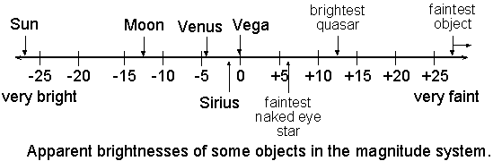
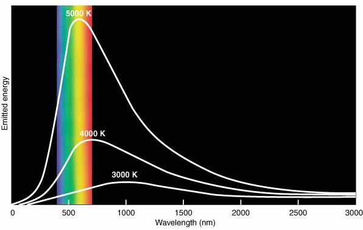
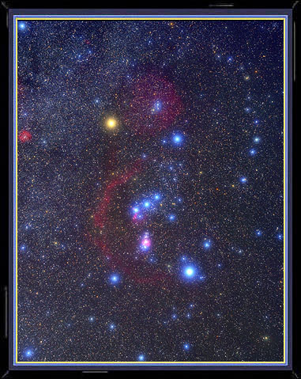
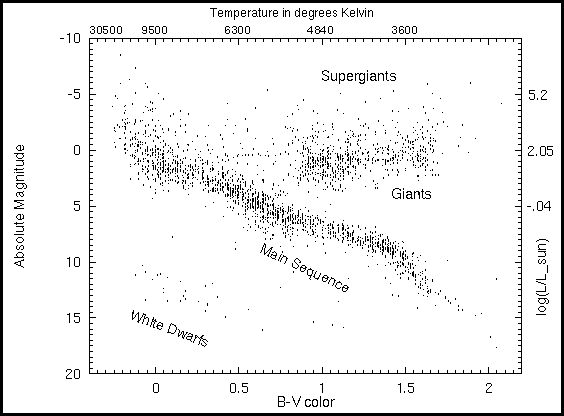
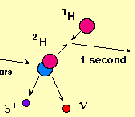
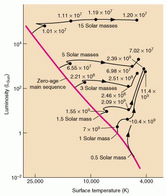
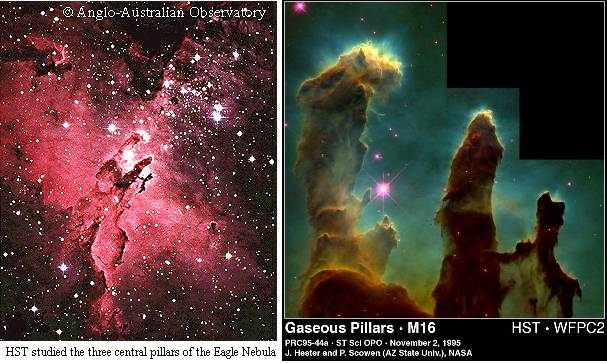
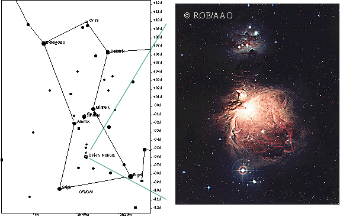
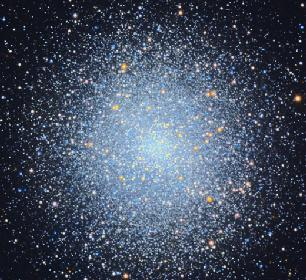
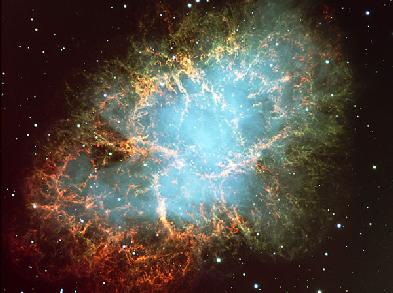

ASTR 1230 (O'Connell) Lecture Notes
5. STELLAR ASTRONOMY
{kind=link}
Young star cluster NGC 1818 in
the
Large Magellanic Cloud (HST)
A. INTRODUCTION
Our ancestors had wondered about the stars for probably a million years, but only in the 20th century did we achieve a real understanding of their physical nature and their life cycles. This can fairly be said to be the main accomplishment of astronomy since 1900. We now understand the stars in almost all their essentials, and only details remain to be worked out. The astrophysical study of the stars has provided many crucial insights:- The Sun is a star, with properties typical of those of billions of other stars in our Galaxy. This recognition resolved thousands of years of religious, philosophical, and scientific debate. To learn the fate of the Sun, on which we absolutely depend for survival, we must look to the stars.
- Stars generate their energy mainly by burning hydrogen in
nuclear fusion reactions. Because it is the most
abundant element, the hydrogen supply is large; but it is nonetheless
finite, so this implies that all stars must
evolve---i.e. change their properties with time.
- Among other things, this means that the favorable conditions in the Earth's biosphere cannot exist for ever and that humans, or their descendents, will have to leave Earth at a predictable (if very distant) time in the future to survive.
- Our
understanding of stellar evolution allows us to age-date the stars and
thus establishes the basic time scale of the universe. The
universe must be at least as old as the oldest stars.
- The age of the Sun is 5 billion years. The oldest objects yet dated (globular star clusters---see below) are about 13 billion years old. No identifications of significantly older stars have been made. The universe is therefore very ancient but had a finite beginning. Independent evidence on the age of the universe from observations of the cosmic microwave background radiation agrees that the universe is about 13.7 billions years old.
- All of the elements heavier than helium have been
synthesized by nuclear reactions inside stars during
their evolution. The Earth and all its inhabitants are made of atoms
that passed through stars now long dead.
- There could be no organic molecules without stellar
nucleosynthesis. For instance, all the atoms of carbon, nitrogen,
oxygen, and phosphorus essential for DNA molecules are created inside
stars (mostly stars at least 5 times more massive than the
Sun).
- Stars continuously form out of interstellar gas. Although the Sun is middle-aged, there are many "young" stars with ages of less than 10 million years within easy reach of your telescopes.
- The Earth actually lies inside the Sun's (extended) atmosphere, so all forms of atmospheric activity on the Sun can potentially affect us.
B. PROPERTIES OF THE STARS
APPARENT BRIGHTNESSES (MAGNITUDES)
- Astronomers measure brightnesses of stars using a refined version of the magnitude system introduced by the Greek astronomer Hipparchus about 130 BC. Hipparchus ranked the visible stars from first to sixth magnitude, with first being brightest.
- The magnitude system was elaborated and made quantitative after it became possible to measure accurate relative brightnesses of stars with telescopes and auxiliary instruments. The system is logarithmic because biological systems like the eye respond in proportion to the logarithm of the stimulus.
- The modern magnitude system is defined by the following expression:
-
mag = -2.5 log f + C
- As a result of this definition, a 1 magnitude difference in brightness corresponds to a factor of 2.51 in flux.
- For instance, a star with m = 4 produces 2.51 times less flux than a star with m = 3.
- A factor of 10 in flux corresponds to 2.5 magnitudes; a factor of 100 corresponds to 5.0 magnitudes.
- Smaller magnitudes correspond to brighter stars.
- The modern magnitude scale is open-ended and has been extended well past the the sixth magnitude faint limit of Hipparchus. It has been expanded in the other direction as well -- to negative values for very bright objects. (The Sun and Moon weren't included in the original scale).
- The chart below shows some familiar objects on the magnitude
system. The brightest stars, like Sirius and Vega, are near zeroth
magnitude. The faintest you can see under good sky conditions with
the naked eye are 5th-6th magnitude (depending on your eyesight).
With your 8-in telescopes, you could see stars up to mag 12-13. The
faintest objects detected so far (with the Hubble Space Telescope) are
distant galaxies at about mag 30.

- Here is another graphic illustrating the magnitude scale.
- Here is a list of the 50 brightest stars.
{kind=link}
{kind=link}
INTRINSIC BRIGHTNESSES (ABSOLUTE MAGNITUDES OR LUMINOSITIES)
- The magnitude scale just discussed measures the apparent brightness of stars---i.e. how they appear from the Earth. It does not refer to their intrinsic brightnesses.
- The apparent brightness of a star depends on its intrinsic brightness but also on the distance to the star.
- In the 19th century, astronomers obtained the first accurate measures of stellar distances (using the geometrical parallax method). This enabled us to determined the intrinsic luminosity of stars---i.e. their total energy output per second, measured in units of "power" like watts. The luminosity of the Sun, a middling star, is 4 x 1026 watts.
- Even the nearest stars turn out to be very distant, at
least by the expectations of early astronomers (and certainly by
everyday standards!).
- Alpha Centauri (in the southern hemisphere) is
the nearest star. It is at a distance of 1.3 parsecs.
-
A parsec is a convenient unit for the typical distances
between stars near the Sun. It is defined in terms of the size of the
Earth's orbit. One parsec is 3.1 x 1013 km(!), 206,000
times the distance to the Sun, or about 3.25 light years (one light
year is the distance light travels in a year).
- Here is a perspective plot of the stars within 50 light years (15.4 parsecs) of the Sun.
- Here is a list of the stars within 5 parsecs (16.3 light years) of the Sun. Most of the names will be unfamiliar, because these objects are mostly quite faint (despite their proximity). However, three of the brightest stars in the sky are on the list (Alpha Centauri, Sirius, and Procyon).
- Alpha Centauri (in the southern hemisphere) is
the nearest star. It is at a distance of 1.3 parsecs.
- Because of uncertainties in the flux scales which weren't
resolved until late in the 20th century, astronomers established a
convenient, but arbitrary, version of the magnitude system to measure
luminosities. This is the absolute magnitude system,
and it ranks stars according to their intrinsic luminosities. Absolute
magnitude is defined to be the apparent magnitude that a star would
have if it were at a distance of 10 parsecs.
- Since most stars lie at distances far greater than 10 parsecs, their absolute magnitudes are much brighter than their apparent magnitudes.
- It turns out that the easily visible stars, which have an apparent brightness range of only about 100:1, have a luminosity range of over 10,000:1.
- Although the Sun dominates our sky, this is only a proximity effect. Intrinsically, the Sun is a relatively faint star. If placed at 10 parsecs distance, the Sun would appear only as a star of 4.8 magnitude (barely visible under typical viewing conditions), whereas Deneb (Alpha Cyg) at that distance would be at -8.7 magnitudes, far brighter than Venus.
- Here is magnitude and distance information for some familiar stars.
Barnard's Star is typical of the very faint "red dwarf" stars which
predominate numerically.
Magnitudes and Distances For Some Well-Known Stars* Star App.Mag. Distance (pc) Abs.Mag. Luminosity/Sun Sun -26.7 4.84813×10-6 4.8 1 Sirius (Alpha CanMaj) -1.4 2.64 1.5 22.5 Arcturus (Alpha Boo) -0.05 11.25 -0.31 114 Vega (Alpha Lyr) 0.03 7.76 0.58 50.1 Spica (Alpha Vir) 0.98 80.5 -3.6 2250 Deneb (Alpha Cyg) 1.3 3230 -8.7 250,000 Barnard's Star 9.5 1.82 13.2 1/2310 -
*Magnitudes in the ``V'' filter. Original table by
Nick
Strobel.
{kind=link}
TEMPERATURES
- We have learned to measure the surface temperatures of stars using
their electromagnetic spectra, following
experiments first done by the physicist Kirchhoff in the 19th century.
- Bad Philosophy Footnote: Click
here for a description of one of the worst, but not one of
the last, faulty prognostications about science by a philosopher,
in this case the claim that we could never know the temperatures
of the stars.
For background on the electromagnetic spectrum, see
these notes from ASTR 1210.
- The EM spectrum of any star depends on its temperature.
Hotter objects emit more energy at shorter wavelengths;
cooler objects emit more energy at longer wavelengths.
Hence, the temperature of a star determines its color. Hot
stars will look blue-white to the eye while cool stars look
yellow-red.

- The diagram above shows the gross EM spectra of 3 stars with different temperatures. (The extent of the visible band is shown in color.) The diagram illustrates how temperature affects the wavelength at which the energy output of a star peaks. (500 nm on this wavelength scale corresponds to 5000 Å.) The higher the temperature, the shorter the wavelength of the peak.
- The Sun, with a surface temperature of 6000o
Kelvin, has a spectrum which peaks near 5000 Å---i.e. in
yellow-green light.

-
(Does this fact, combined with the principle of
natural biological selection, suggest a reason why our eyes are most
sensitive to yellow-green light?).
- Vega, Sirius, and Rigel, with temperatures near 10000o K, look blue-white. Arcturus or Pollux, with temperatures near 4500o K, are yellowish. Yet cooler stars, like Aldebaran, Antares, and Betelgeuse are orange-red.
- The image at right shows Orion in color, contrasting Betelgeuse (upper left) with the other bright blue-white stars in the constellation, including Rigel (lower right). (The pinkish color in the lower center is caused by glowing nebular gas; see below.) Click here for an image of the Southern Cross in dispersed color. Only unusual objects, like carbon stars, look "stoplight red."
- Colors are more apparent in telescopes or binoculars, because your eye requires a relatively high level of flux to distinguish colors.
- For a Java demo of the effects of temperature on EM radiation, see this Davidson Webphysics applet..
- [Note: the colors of stars reflect only their surface temperatures. The deep interiors of stars have much higher temperatures, 15 million degrees in the case of the Sun.]
{kind=link}
{kind=link}
{kind=link}
MASSES
- The mass of a star turns out to be the key to determining its life
cycle.
-
Masses of stars are measured mainly by applying
Newton's laws of motion and gravitation to stars which are
in orbit around one another, i.e. binary or "double"
stars.
Newton showed that the time taken to complete one orbit (the
"period") by any object in a gravitational orbit around another is
related to the combined mass of the two objects. By measuring the
orbital sizes and periods of binary stars (and also their
distances from us), we can therefore determine their masses. During
the 19th and early 20th centuries, small telescopes were often used
for this kind of study.
You can find lists of brighter binary stars in each constellation
here.
- The masses of normal stars have a smaller range than do their intrinsic brightnesses. The lowest mass, self-sustaining stars are about 0.1 solar mass, while the most massive are in the range 20-50 solar masses.
C. STELLAR EVOLUTION
THE HERTZSPRUNG-RUSSELL DIAGRAM
- The basic observational insight to understanding the structure & evolution
of stars is the correlation between the luminosities and temperatures of
stars found in the Hertzsprung-Russell (HR) diagram, which was
discovered independently by two astronomers ca. 1910. Their work depended
on the painstaking accumulation of measures of accurate distances to stars.
A modern version for stars in the vicinity of the Sun is shown below:

- In the HRD, stellar luminosity increases upwards while temperature increases to the left (an artifact of tradition). Bluer stars hence are at the left side of the diagram, redder stars to the right.
- The important point is that stars are not randomly scattered in
the diagram but instead confined to well-defined sequences.
- Most stars fall on the main sequence (MS), which runs diagonally across the HRD. More luminous MS stars are also hotter. The Sun is an MS star (lying at T = 6000 and AbsMag = 4.8).
- A second concentration of the so-called red giants and supergiants falls in the upper right hand quadrant of the HRD (luminous but cool). These are "giants" both in luminosity and in diameter (they can be over 100 times the size of the Sun). Finally, the white dwarfs are very faint stars lying beneath the MS.
{kind=link}
STELLAR PHYSICS
- A key discovery for interpreting the HRD was that the masses of main sequence stars are systematically higher at higher luminosities and higher temperatures.
- The structure present in the HRD and the mass-luminosity relation are basic clues to stellar physics. This was enough information to allow astrophysicists like Eddington and Bethe to analyze the basic structure of stars and then, in the late 1930's, to discover the prodigious energy source that maintains them: nuclear fusion reactions. 
- If its interior is not kept hot, a star like the Sun would
collapse under its own gravity in only 15 minutes. But nuclear
reactions in the core of a star release enough energy to keep its
interior hot enough (15 million degrees) to produce pressure
sufficient to resist collapse.
- The nuclear reactions that sustain a star involve the fusion of light elements like hydrogen (H) and helium (He) to make heavier elements, with the release of energy. The most important reactions during the MS phase fuse four H nuclei (protons) to form one He nucleus. Click on the thumbnail at right for a more detailed illustration of the proton-proton reaction.
- There is obviously a tremendous amount of nuclear fuel in a star like the Sun. Hence, it can stay in the MS phase burning hydrogen for a very long period of time. The MS lifetime for a star like the Sun is 10 billion years. The Sun is now 5 billion years old---therefore halfway through its MS phase.
- More massive stars evolve faster. They have more fuel but they burn it much more quickly, so that the MS lifetime for a star which is 15 times the mass of the sun is "only" 10 million years. 
- As efficient as are nuclear reactions, however, stars have only a finite supply of fuel. They can remain on the MS burning hydrogen for a long time, but the accumulation of nuclear "ashes" in their centers means that eventually nuclear burning will cease there. Stars must readjust to avoid collapse. This is the reason that stars must evolve and consequently change their locations in the HRD.
- The late stages of evolution involve a complex series of switches to other fuel sources, e.g. helium and carbon, the burning of which synthesizes heavier elements. There are also gross changes in the structure of the stars. The most important of these is an enormous inflation of their outer envelopes, which produces the red giants. Red giants are therefore not a different species of stars; instead, they are normal stars in the late stages of evolution.
- Giants burn fuel so fast that they soon reach a crisis where no more suitable nuclear fuel is available. Smaller stars, like the Sun, react by puffing off their outer layers and collapsing to become white dwarfs. These tiny, dense cinders are inert; they slowly lose their retained heat but cannot support nuclear reactions. Very massive stars undergo tremendous supernova explosions, leaving behind either neutron stars or black holes.
- The diagram at the right shows evolutionary tracks in the HRD for stars of different initial masses. Ages are marked on the tracks. Note that stars like the Sun become much more luminous but cooler as evolution proceeds. More massive stars undergo the whole process much more rapidly than lower mass stars.
{kind=link}
{kind=link}
{kind=link}
{kind=link}
D. STELLAR EVOLUTION IN THE SKY
With binoculars and small telescopes you can observe many aspects of the stellar life cycle, including individual stars, binary stars, and star clusters. The most interesting phenomena involve the initial and final phases of stellar evolution: star birth and death.{kind=link}
-
Apart from individual stars and binaries, the brighter objects
relevant to stellar evolution are mostly listed in the Messier
Catalog: This catalog was compiled by the 18th
century astronomer Charles Messier. It contains star clusters,
nebulae, and galaxies. Messier established it not because of an interest
in these kinds of objects but so he would not mistake them for comets,
which were his passion. The web site listed at the bottom of this
page contains lists and descriptions of the Messier objects. Here is a mosaic of
images of the 110 Messier objects. An updated version of the Messier
Catalog is the The Caldwell
Catalog.
The best Messier objects and other binary stars, clusters, and
nebulae for viewing with your 8-inch telescopes are listed in
the ASTR 1230 Lab Manual.
{kind=link}
- Star formation occurs inside clouds of
interstellar gas which are shielded and refrigerated
by dust grains
(tiny, solid particles like smoke) and have become dense and cold
enough to form molecules. On the sky, gas and dust clouds and nascent
groups of stars are concentrated in and near the Milky Way.
-
Because the dust absorbs and scatters light at optical
wavelengths, dust clouds look like
dark blotches (called
"dark nebulae") when seen in projection against more distant
nebulae or star fields.
Starbirth begins when cold interstellar clouds begin to collapse under
their own gravity. Most of this process is hidden from easy
view at optical wavelengths by the dust and can only be observed with
infrared telescopes. (Infrared light more easily penetrates the
dust clouds.)
However, once stars form, they disrupt the surrounding clouds within a
few million years, blowing away the gas and dust and often causing it
to glow by virtue of
ionization produced by far-ultraviolet light from hot
stars more massive than about 10 solar masses. (In an ionized gas,
one or more electrons are stripped from its atoms.)
A visible signature of an ionized nebula is a "pinkish" glow, produced
by concentrated emission from hot hydrogen gas. Many spectacular examples
of this nebular phase can be seen in the sky, including the
Eagle, Triffid, and Lagoon nebulae. The Orion Nebula is the easiest
example to observe.
Overall, about 1 solar mass of material is converted to new stars each
year in our Galaxy. Rates up to about 1000 times higher are observed
in some very gas-rich environments in other galaxies.

Starbirth region in the Eagle Nebula, a beautiful mixture of cold dust pillars (dark lanes) surrounded by hot gas. At left is a wide-field view of the whole Nebula. At right is the HST closeup of the central dust pillars. Click for enlarged view. 
The Orion Nebula surrounds the (multiple) central star of Orion's "sword." Stars are continuously forming in a dark molecular cloud (not visible) behind the Nebula; the Nebula is only a small part of the cloud where hot stars have begun to blow out and ionize the gas. Click for a close up of the Nebula. - We think that most stars form
in clusters---compact groups of a few hundred up to
hundreds of thousands of stars, all formed within a small span of
time.
-
The youngest, still-forming star clusters are usually enshrouded
by dust. But clusters can stay together for long times, so we can see
many mature clusters easily in small telescopes. Good descriptions of
the brighter clusters are given in the SEDS Messier pages.
Star clusters are essential diagnostics of stellar evolution. Each
cluster provides a "snapshot" HRD at its particular age. Since
its constituent stars differ only in mass, one can use them to
trace the rate of evolution with mass.
Younger bright star clusters include
h and Chi Persei,
the Pleiades, the Praesepe, and
the Hyades. Their estimated ages are 15, 100, 700, and 800 million
years, respectively. These are of the "open" type---not highly
concentrated and containing only a few hundred up to a few thousand
stars.
The youngest clusters contain bright, blue-white, massive stars. But
more massive stars complete their evolution and disappear more
quickly, so the brightest stars in older clusters are progressively
fainter and cooler.
The most spectacular clusters are the "globular" type, such
as Messier 13, Messier 4, and Messier 15. These are spherical, dense,
and very massive (100,000 or more stars). They are also very
old (10-13 billion years) and are keys to age-dating the
universe. Below is a view of the globular cluster Messier 13.

-
Imagine that the Sun were situated in the middle of a globular cluster
like M13. There would be over 1000 stars brighter than Sirius!
{kind=link}
{kind=link}
{kind=link}
{kind=link}
{kind=link}
{kind=link}
{kind=link}
{kind=link}
- Many of the familiar bright stars are in the main sequence phase. This is the longest-lived phase of evolution, fueled by hydrogen burning, and relatively quiescent. The Sun, Vega, Sirius, and Spica are all MS stars; their intrinsic brightness and temperature depends only on their masses.
- Other bright stars are in the giant phase of evolution. They are evolving relatively rapidly, burning helium in their cores and hydrogen in a shell surrounding the core. They have swollen to enormous volumes. Bright giants include Arcturus and Aldebaran. Betelgeuse and Antares are red supergiants. Deneb is a white supergiant. Giants only live about 10% as long as the preceding main sequence phase. However, their high luminosities allow us to detect them at large distances, so there are many to see in the sky.
- Especially in the giant phase, but also in other phases, the
luminosity of stars can become variable. The most
common cause of variability is pulsation of the stellar surface, which
changes its luminosity and temperature. Cepheids (named
after Delta Ceph) and RR
Lyrae stars are two important types of pulsational variables.
These types are widely used to estimate distances to star clusters and
galaxies. Lists of well-known variable stars can be found at
James Kaler's Stars site.

- Binary stars are widely observed by amateur astronomers.
They can present nice color contrasts (Beta Cygni or "Albireo" is
shown at the right). Observers like to test the quality of their
equipment by trying to resolve very close binaries.
-
The orbits of binary components around one another
are often determined with small telescopes, though this, of course,
may take years of observations.
Some binaries, like Algol (Beta
Persei), can vary in brightness because
of eclipses of one star by the
other or gravitational interactions between the two
companions. Amateur astronomers have made enormous contributions to
the study of variable stars and binaries. A list of well-known binary
stars can be
found here.
{kind=link}
{kind=link}
{kind=link}
{kind=link}
{kind=link}
- The final phases of evolution depend on a star's mass. Lower
mass stars like the Sun become very distended and eject their outer
layers.
-
The remaining core collapses and heats up on its way to becoming a
white dwarf. The ejected shell of material often produces a
"planetary" nebula, so called because of their often round
shapes, when it is ionized by radiation from the collapsing star.
Planetaries are nice targets for small telescopes. The Ring Nebula
(Messier 57) and the Dumbbell Nebula (Messier 27) are bright
planetaries. HST images of two other examples are shown below:
- More massive stars, above about 8 solar masses, undergo a
tremendous
supernova explosion, blowing off their outer layers
and leaving behind a compact neutron star or black
hole. The Crab Nebula (Messier 1) is a remnant of such an event
(image below). Nucleosynthesis of elements between oxygen and
rubidium in
the Periodic Table) occurs during supernova explosions.
 - NASA recently released some remarkable
time-lapse X-ray and optical movies of the Crab Nebula which show
waves of energy being injected into the nebula from the central
spinning neutron star.
- Planetary nebulae and supernova remnants mark the recycling of synthesized elements back to the interstellar medium. These can be later incorporated into new generations of stars, planets, and, ultimately, lifeforms like us.
{kind=link}
{kind=link}
{kind=link}
{kind=link}
Assignment:
-
Download, print, and read the webnotes for this lecture.
Take the Review Quiz for week 6 on Collab
Supplementary reading: The best resource for this material is a good
ASTR 1210/1220 textbook.
Start Lab 3 as soon as possible.
Web links:
-
Nick
Strobel's Astronomy Pages for background information on
stellar and galactic astronomy
Stellar Evolution Simulator/Tutorial (Univ. of Illinois).
Tutorial on stellar evolution by John Lattanzio. Intended for advanced undergrads or grad students, but gives a good impression of how well the details of stellar evolution are now understood.
Robert Gendler's Astrophotography Site--nice examples of state-of-the-art astronomical images with small telescopes. For others, see the ASTR1230 links page.
The Messier Catalog--- information and links for the brightest nebulae, star clusters, and galaxies
The Caldwell Catalog--- an updated version of the Messier catalog
American Association of Variable Star Observers---main site for information on variable stars
 Previous Lecture
Previous Lecture
|
 Lecture Index
Lecture Index
|
 Next Lecture
Next Lecture
|
Last modified January 2023 by rwo
Apparent magnitude diagram, table, HR diagram, Eagle and Orion images copyright © 2000 by Nick Strobel. Plots of stars within 50 LY copyright © by R. Powell. Color image of EM spectra and plot of evolutionary tracks copyright © 2000 Harcourt, Inc.. Nuclear reaction drawing copyright © 1999 by Mike Guidry, Univ. of Tennessee. M13 picture by T. Hallas. Color photo of Orion copyright © by Bill & Sally Fletcher. Color photo of Albireo copyright © by M. de Regt. Text copyright © 2000-2023 Robert W. O'Connell. All rights reserved. These notes are intended for the private, noncommercial use of students enrolled in Astronomy 1230 at the University of Virginia.